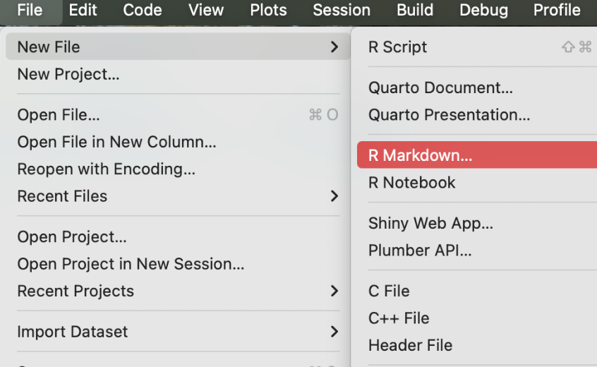
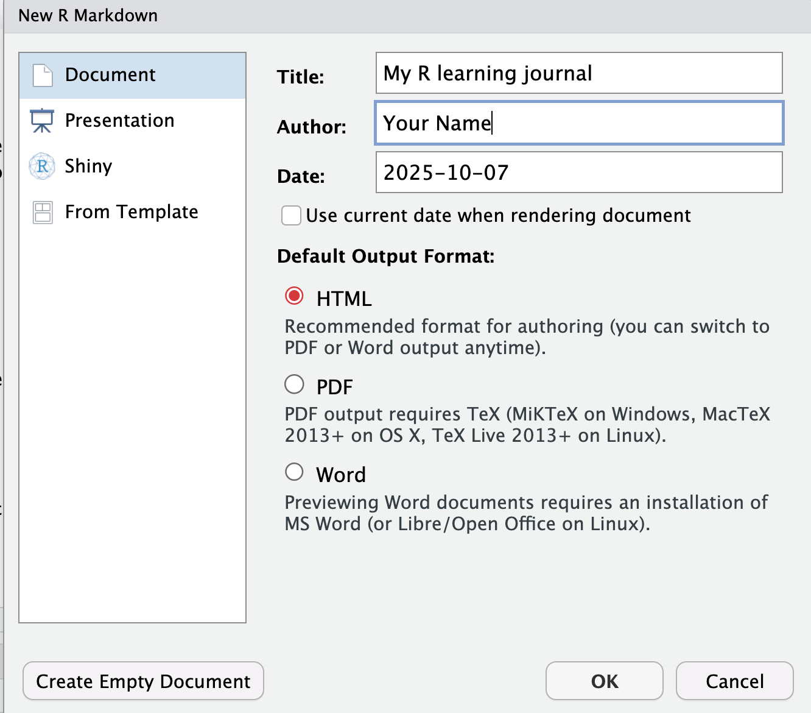
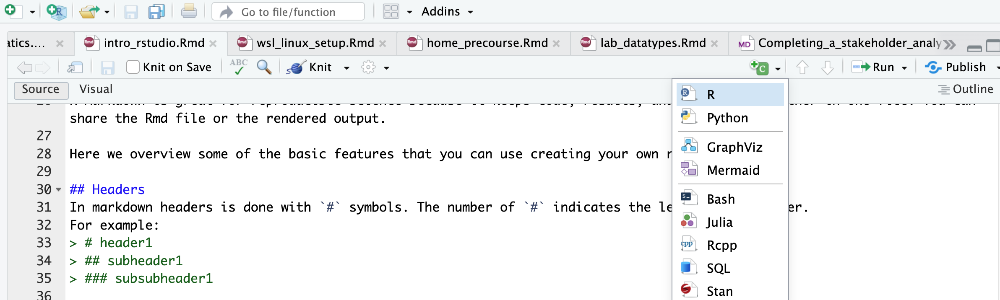
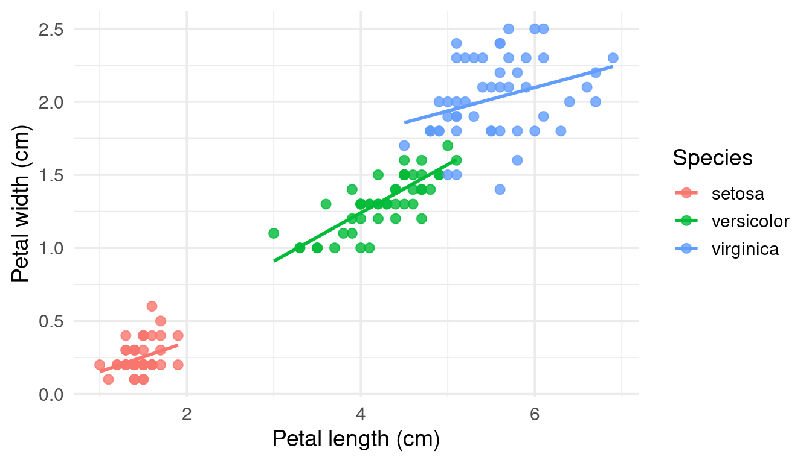
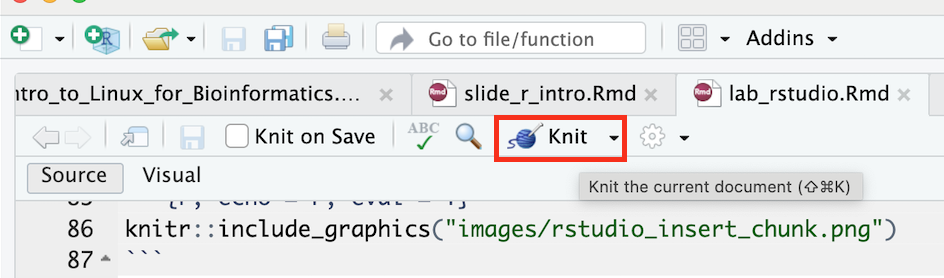

In this lab you will:
R Markdown is a file format for making dynamic documents with R. It combines plain text with chunks of R code that are run when you knit (render) the document to HTML, PDF or Word. Because code, results and narrative live together in one file, R Markdown is a great tool for reproducible science: anyone with the .Rmd file can rebuild your report.
When you open RStudio you will see four panes:
| Pane | What it is for |
|---|---|
| Source (top left) | Writing scripts and R Markdown files. Your work is saved here. |
| Console (bottom left) | Where R actually runs code. Good for quick tests, but nothing is saved. |
| Environment / History (top right) | The objects (variables, data) you have created. |
| Files / Plots / Packages / Help (bottom right) | Your files, your plots, installed packages and help pages. |
Try it: type 2 + 2 in the Console and press Enter. Then type ?mean and look at the Help pane.
Code typed in the Console is gone when you close RStudio. Code written in a script or R Markdown file is saved and can be re-run at any time. Use the Console for quick experiments, and files for anything you want to keep.
A Project keeps all files for one piece of work in one folder and sets the working directory for you, so file paths just work.
r-course and choose where to save it.Check where R is “looking” for files:
getwd()The path should end with r-course.
Install ggplot2 (you only need to do this once per computer):
install.packages("ggplot2")Load it (you need to do this every time you start R):
library(ggplot2)If library() gives an error saying there is no package called ggplot2, the installation did not work. Ask a teacher!
In RStudio: File → New File → R Markdown… → Document. Set the title to “My R learning journal”, choose HTML, click OK, and save the file as learning_journal.Rmd in your r-course project folder.


RStudio fills the new file with example content. Delete everything below the YAML header (the part between the two --- lines) so you can start fresh.
An .Rmd file has three kinds of content:
---): controls output settings.The YAML header sits between the --- lines at the top of the file. It controls settings like title, author, date, output format and table of contents. For example:
---
title: "My R learning journal"
author: "Your Name"
date: "`r Sys.Date()`" # today's date, filled in when you knit
output:
html_document:
toc: true # table of contents
toc_depth: 3 # header levels shown in the toc
number_sections: true # number the headers
---Writing date: "2026-11-02" would fix the date forever. Using `r Sys.Date()` asks R for today’s date every time you knit.
Markdown is a lightweight way to add structure to plain text. It is easy to learn and used in many places (GitHub, forums, note-taking apps).
Headers are made with # symbols. The number of # sets the level:
# Header 1
## Header 2
### Header 3Leave a blank line before and after a header, otherwise it may be shown as plain text.
Bold text: **bold**
Italic text: *italic*
Inline code: `1 + 1`
Lists (leave a blank line before the list):
- item one
- item two
1. first
2. second
Links: [NBIS](https://nbis.se)
Images: Insert an R chunk by clicking the green +C button and choosing R, or with the keyboard shortcut Cmd + Option + I (Mac) or Ctrl + Alt + I (Windows/Linux).

A chunk looks like this in your file:
```{r}
1 + 1
```and like this when knitted:
1 + 1## [1] 2Run a single chunk while you work by clicking the green ▶ in its top-right corner.
Chunk options go inside the curly braces, e.g. {r, echo=FALSE}, and control how a chunk behaves:
| Option | Description | Example |
|---|---|---|
eval |
Whether to run the code | eval = FALSE |
echo |
Whether to show the code in the output | echo = FALSE |
include |
Whether to show anything (code and results) | include = FALSE |
fig.width |
Width of figures in inches | fig.width = 7 |
fig.height |
Height of figures in inches | fig.height = 5 |
message |
Whether to show messages | message = FALSE |
warning |
Whether to show warnings | warning = FALSE |
results |
How to show results: markup (default), asis, hold, hide |
results = 'hide' |
For example, this chunk uses eval=TRUE, echo=TRUE, message=FALSE, warning=FALSE, so it shows the code and the results but hides messages and warnings:
summary(cars) # summary statistics of the built-in cars dataset## speed dist
## Min. : 4.0 Min. : 2.00
## 1st Qu.:12.0 1st Qu.: 26.00
## Median :15.0 Median : 36.00
## Mean :15.4 Mean : 42.98
## 3rd Qu.:19.0 3rd Qu.: 56.00
## Max. :25.0 Max. :120.00You can put R results directly into a sentence. Writing
The cars dataset has `r nrow(cars)` rows.gives: The cars dataset has 50 rows.
If the data changes, the number in your text updates automatically when you re-knit.
Now fill in learning_journal.Rmd. Add each section below as a header, write a few sentences, and add code chunks where asked. Knit often to check your work.
Write a few sentences about yourself and the project you are working on.
Make a bulleted list:
Insert a chunk and write a calculation of your own, for example your age in days or the number of samples in your project. Use eval=TRUE, echo=TRUE so both the code and the result are shown.
Add this chunk and knit. Five lines of R give you a publication-style figure:
ggplot(iris, aes(x = Petal.Length, y = Petal.Width, colour = Species)) +
geom_point(size = 2.5, alpha = 0.8) +
geom_smooth(method = "lm", se = FALSE) +
labs(x = "Petal length (cm)", y = "Petal width (cm)") +
theme_minimal(base_size = 14)
Try it: change Petal.Length to Sepal.Length and knit again. How long would that take to redo in Excel?
Copy this chunk into your journal and knit:
expr <- data.frame(
sample = paste0("S", 1:6),
group = c("control", "control", "control", "treated", "treated", "treated"),
value = c(5.1, 4.8, NA, 7.9, 8.4, 8.1)
)
tapply(expr$value, expr$group, mean)## control treated
## NA 8.133333Why is the mean for control NA? One fix is to ignore missing values:
tapply(expr$value, expr$group, mean, na.rm = TRUE)## control treated
## 4.950000 8.133333In your journal, write one or two sentences: is it OK to simply drop the missing value? What would you report in a paper?
Insert an image with Markdown syntax:
or from a code chunk, which lets you control the size:
knitr::include_graphics("https://www.r-project.org/logo/Rlogo.png")To use your own image instead, save it inside your project folder (e.g. in a subfolder images/) and use a path like images/my_figure.png. If the file does not exist, knitting will stop with an error.
Ask an AI assistant to write a chunk that, for example, calculates the mean Petal.Length for each Species in iris. Paste the code into your journal, then write down:
End your journal with this chunk. It records your R version and loaded packages, so others (and future you) know exactly what was used:
sessionInfo()Click the Knit button. RStudio renders your file and opens the HTML report.

You can also render from the Console:
rmarkdown::render("learning_journal.Rmd")| Command / action | What it does | Example |
|---|---|---|
| File → New Project | Creates an RStudio Project | r-course |
install.packages() |
Installs a package (once) | install.packages("ggplot2") |
library() |
Loads a package (every session) | library(ggplot2) |
| File → New File → R Markdown | Creates a new Rmd template | learning_journal.Rmd |
| Markdown headings / lists | Structure your narrative | ## Project idea |
| Code chunk | Runs R code reproducibly | ```{r} … ``` |
| Chunk options | Control chunk behaviour | echo=FALSE, fig.width=7 |
| Inline R code | Puts R results in your text | `r 2 + 2` |
rmarkdown::render() |
Knits from the Console | rmarkdown::render("learning_journal.Rmd") |
sessionInfo() |
Records R and package versions | sessionInfo() |
Mini challenges to lock in what you learned. Hints are inline; click to reveal the answers.
Q1. If you press Knit but the file has never been saved, what happens?
Hint: what does Knit need to know about the file’s location?
RStudio asks you to save the file first. Knitting needs a file on disk to work out paths and to know where to write the output, which is saved in the same folder as the .Rmd.
Q2. Your knitted report shows ## Results as plain text instead of a heading. Why?
Hint: look at the lines around it.
Most likely there is no blank line before the heading (or no space after the # symbols). Markdown needs a blank line before a heading and a space between # and the text: ## Results.
Q3. Your code chunk shows the code but no result. Why?
Hint: check the chunk options.
The chunk probably has eval = FALSE, which shows the code without running it. Change it to eval = TRUE (or remove the option, since TRUE is the default). Also check that the chunk starts with ```{r} and is closed with ```; otherwise it is treated as plain text.
Q4. Your report knits, but the code is hidden and only the results are shown. Which chunk option causes this?
echo = FALSE. It runs the code and shows the results, but hides the code itself.
Q5. You run library(ggplot2) and get “there is no package called ‘ggplot2’”. What do you do?
Install it first with install.packages("ggplot2"), then run library(ggplot2) again. Installing is needed once per computer; loading is needed in every session.